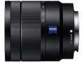

器材库 > APS画幅镜头 > Vario-Tessar T* E 16-70/4 ZA OSS

详细规格
镜头类型
标准变焦镜头
发布日期
2013-08-27
厂家推荐价格
103,950.00 （日元）
焦距
16mm-70mm
等效35mm画幅焦距
24mm-105mm
最大光圈
f/4
最小光圈
f/22
视角（对角）
83°-23°
镜头结构
16片/12组
光圈叶片
7片
最近对焦距离
35cm
最大放大倍率
0.23倍
滤镜口径
55mm
镜头卡口
Sony E
防抖
是
颜色
银色, 黑色, 白色
尺寸
66.6×75mm
重量
308g
待到秋来九月八2017-03-11 09:144.75 分
操作性 5.00耐用性 5.00性价比 4.50解像力 4.50色彩还原 4.50机械结构 5.00
kanon2015-08-06 20:574.17 分
操作性 4.50耐用性 4.50性价比 3.50解像力 3.50色彩还原 5.00机械结构 4.00
lzzq2014-10-10 13:444.83 分
操作性 5.00耐用性 5.00性价比 5.00解像力 4.50色彩还原 4.50机械结构 5.00
fsscn2014-05-08 09:194.58 分
操作性 5.00耐用性 4.50性价比 4.00解像力 5.00色彩还原 4.50机械结构 4.50
msw20002014-04-10 18:524.75 分
操作性 5.00耐用性 5.00性价比 4.00解像力 5.00色彩还原 4.50机械结构 5.00
muduo2013-09-25 21:594.92 分
操作性 5.00耐用性 5.00性价比 4.50解像力 5.00色彩还原 5.00机械结构 5.00
gyfcws2013-09-13 16:404.67 分
操作性 4.50耐用性 4.50性价比 4.00解像力 5.00色彩还原 5.00机械结构 5.00